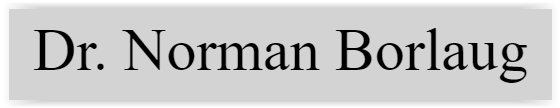

About
Portfolio
Contact
Strona Joanny Tkaczyk - Social Media Specialist, Photographer

Krótkie przedstawienie postaci Dr. Normana Borlaug'a.
Prosty kalkulator napisany w Javie GUI.
Aplikacja konsolowa imitująca schronisko dla zwierząt (dodaj/usuń/sprawdź stan schroniska).